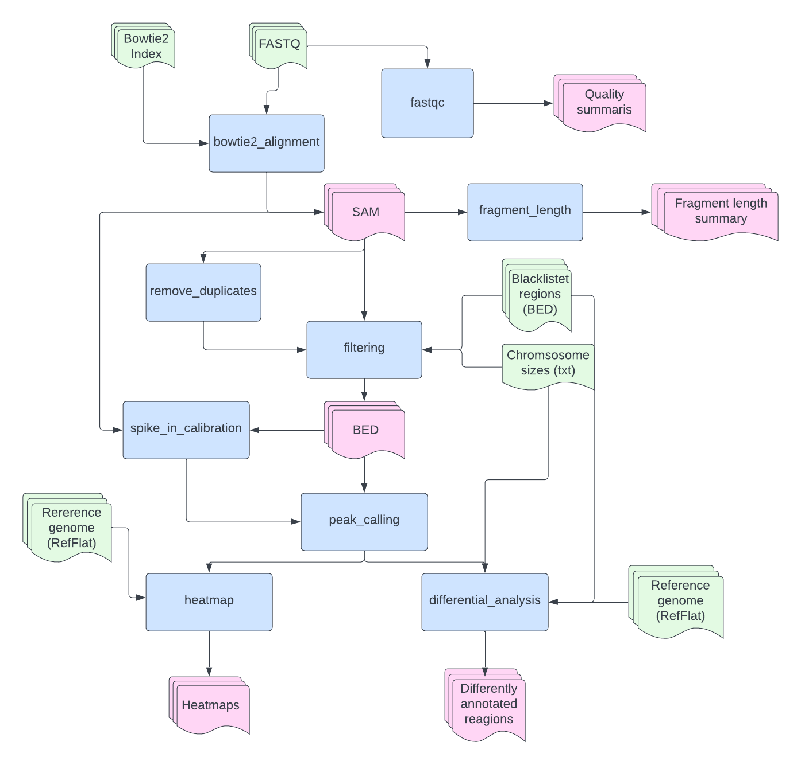

Required Files and Where to Find Them
When using this Python Package, you need to provide different reference files, which you may not know where to find. Therefore, we made this simple overveiw to make it easier for you to locate and download all the necessary files to run the full pipeline. If you are just using some of the functions, please check what files you need to provide in the documentation of the various functions, as you may not have to download them all.
The EpiMapper flowthrough as shown in the figure below. Here, the different functions are represented by blue squares and their output represented by pink shapes. Files that must be provided by the user is represented by green shapes, below is a short decription of these files.
{kind=link}
Bowtie2 index files
As mentioned in the bowtie2_alignment documentation page, you may either supply the index files directly or you may provide a FASTA file of your reference genome.
The Bowtie2 website do actually conatin a lot of pre-made index files for download. Using these may cut the analysis time, as the bowtie2_alignment does not have to create indexing files itself. While these may be a quick solution, it is important to consider the requirement of every experiment (i.e, which parts of the genome should be considered).
FASTA files of refernce genomes may easily be found and downloaded from NCBI´s website. Again, it is essential to check what is included in the reference genome file, as some may include ChrUn or unknown clone contigs that cannot be confidently placed on a specific chromosome. These contigs are usually removed before further analysis as they do not tell us a whole lot and may actually interfere with the analysis, much like the next required file: genome blacklist.
Genome Blacklist BED File
A genome blacklist contrains regions of the genome that should be avioded in further analysis. The reason some areas are removed may differ, but some of the causes may be that the region is highly repetative, leading to false signals, the region is highly condensed or simply not of interest for the study. If you would like to leave out whole chromosomes it is possible to simply include the chromosomes in the geneome blacklist. The file format needed is BED, only containing [chromosome start end] in tab-separated columns. These BED files may be downloaded from UCSC Website or the ENCODE blacklists may be found on GitHub , depending on the reference genome. Here, it is important to remember that the blacklist file must be sorted before using it as input for the EpiMapper pipeline. If you have downloaded from the ENCODE GitHub you may sort the file by running this command:
$ sort -k1,1V -k2,2n -k3,3n YOUR_FILE.bed | cut -f1-3 > YOUR_FILE_SORTED.bed
Chromosome Sizes
A text (.txt) file containing chromosome names and their respective sizes in base pairs must be supplied to utilize the EpiMapper. Here, the two columns must be tab-separated. Here is an example for Rn6:
chr1 282763074
chr2 266435125
chr3 177699992
chr4 184226339
chr5 173707219
chr6 147991367
chr7 145729302
chr8 133307652
chr9 122095297
chr10 112626471
chr11 90463843
chr12 52716770
chr13 114033958
chr14 115493446
chr15 111246239
chr16 90668790
chr17 90843779
chr18 88201929
chr19 62275575
chr20 56205956
chrX 159970021
chrY 3310458
Chromosome size files are avalible for download at the UCSC website. However, as mentioned, these files may contain random chromosomes for example chr4_gl000194_random. These “random” molecules must be removed before utilzing the file. This may be done quite easily manually by simply opening the file in a text editor and removing all the “random” chromosomes. After that the file should be sorted, which is quicly done by:
$ sort -k1,1 YOUR_FILE.txt > YOUR_FILE_SORTED.txt
RefFlat Reference Text File
The last file you will need is a RefFlat text file containing information about where genes are located in your reference genome. These files may also be found at UCSC website. This file will serve as a reference for annotation as well as the creation of heatmaps.
Optinal: Enchancher
If you are intrested in annotation your peaks to enhancer regions, a seperate enhancer reference BED file must be supplied. Enchancer files may be found at EnchancerAtlas 2.0. However,these files must be processed to have this format:
chr1 50218 50564 chr1:50218:50564||enhancer:2||346
chr1 111057 111395 chr1:111057:111395||enhancer:1||338
chr1 173031 174331 chr1:173031:174331||enhancer:3||1300
chr1 174502 176296 chr1:174502:176296||enhancer:6||1794
chr1 176997 177953 chr1:176997:177953||enhancer:1||956
chr1 178015 178611 chr1:178015:178611||enhancer:1||596
chr1 180133 180455 chr1:180133:180455||enhancer:1||322
chr1 180586 180859 chr1:180586:180859||enhancer:1||273
How you achive this format will depend on your starting file, however below is a simple python code for creating this format based on hg19 pancreas from EnchancerAtlas 2.0.
import pandas as pd
bed_file = '/Users/me/documents/Pancreas.bed'
bed_df = pd.read_csv(bed_file,header=None, sep="\t", names= ['chr','start','end','remove'])
bed_out = bed_df[['chr','start','end']].copy()
bed_out['id'] = bed_out.apply(lambda row: f"{row['chr']}:{row['start']}:{row['end']}||enhancer||{row['end'] - row['start']}", axis=1)
bed_out.to_csv(bed_file.replace('.bed','_converted.bed'), header=None, sep='\t', index=False)